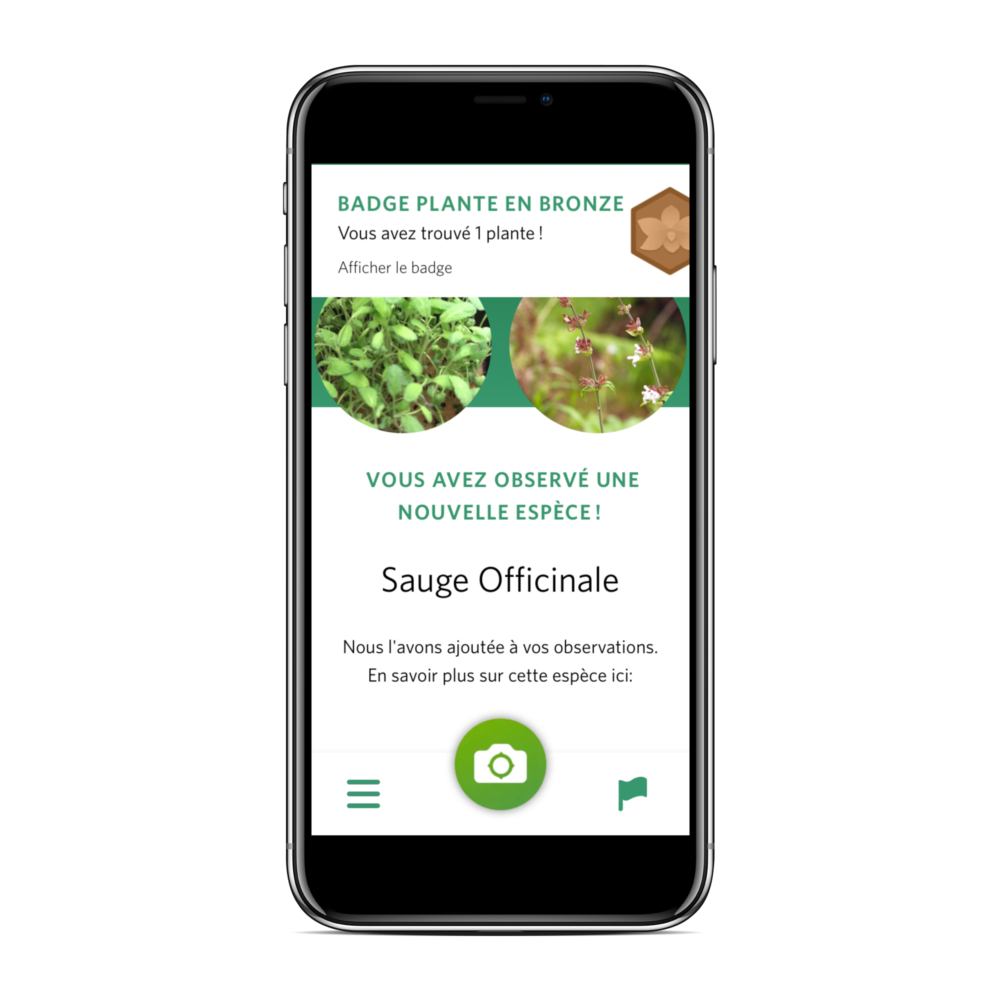
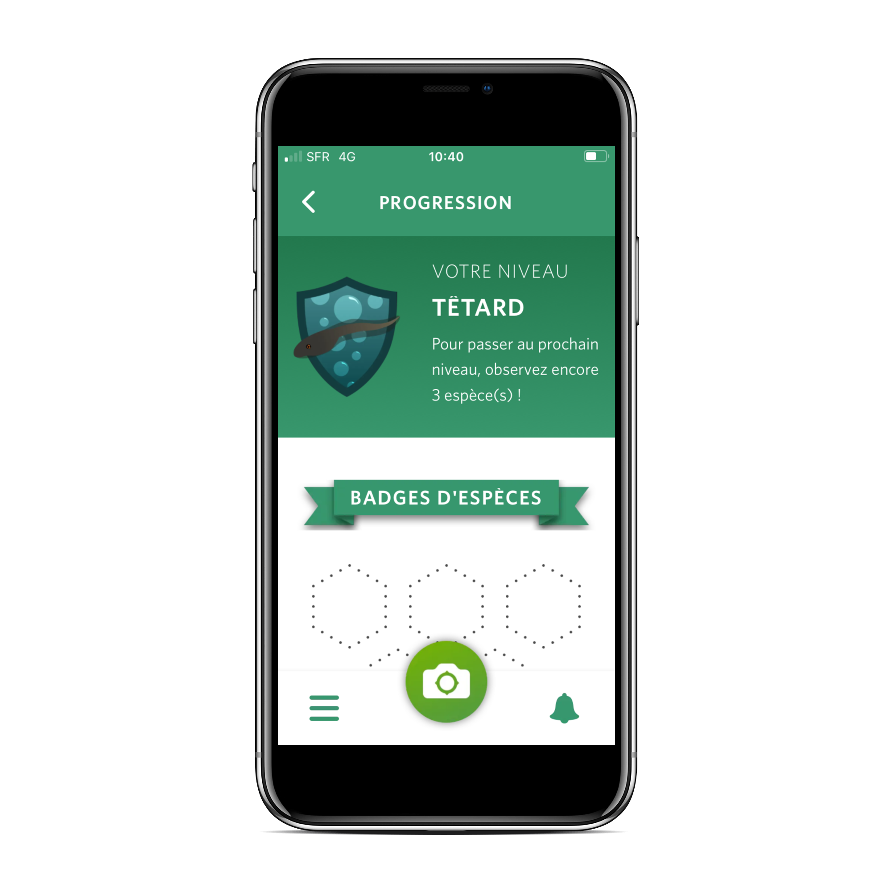
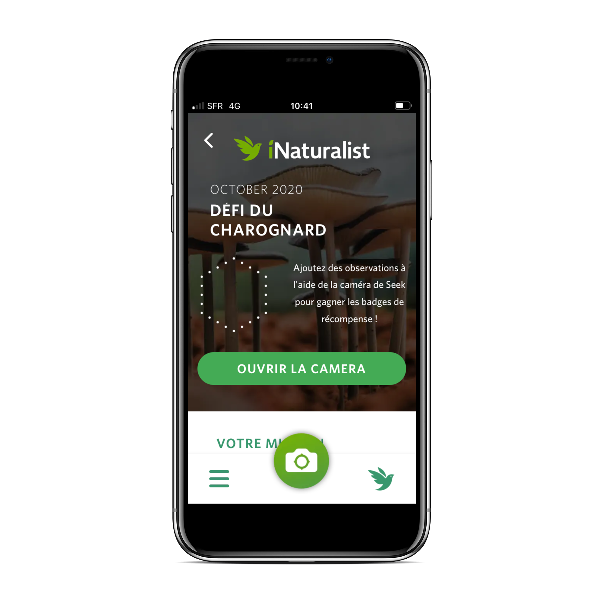

Etape 3

Si un organisme est identifié, il est ajouté à vos observations !
La Caméra Seek peut identifier 20 000 espèces, mais elle n'est pas omnisciente donc elle peut se tromper.
Si vous savez que c'est faux, vous pouvez sur le drapeau pour retirer l'organisme de vos observations.
Parfois, la Caméra Seek n'arrive pas à associer l'organisme à une espèce, pour résoudre ce problème je vous conseil d'essayer différent angle de vue et viser une seule espèce !
Etape 4

Sur l'écran des réalisations, vous pouvez voir votre niveau tout en haut, ainsi que le nombre d'espèces que vous devez observer pour passer au niveau suivant.
Vous pouvez également voir les badges que vous avez gagnés pour avoir vu différents taxons et avoir relevé des défis ici.
Si vous cliquez sur un badge, vous pourrez voir le nombre d'espèces que vous devez observer pour accéder au niveau suivant de ce badge, ainsi que le nombre de badges que vous avez gagnés.
Etape 5

Seek a de nouveaux défis chaque mois depuis d'avril 2020.
Pour participer à un défi, rendez-vous sur l'écran des défis et cliquez sur "Commencer maintenant" à côté d'un défi ou rendez-vous sur la page du défi spécifique et cliquez sur "Commencer le défi".
Vous pouvez participer aux défis à votre propre rythme, vous pouvez les faire un à la fois ou tous à la fois.
Chaque observation que vous faites comptera pour tous vos défis en cours, alors allez dehors et essayer !